Chapter 02. 정보의 표현과 처리
- 컴퓨터는 두 개의 값을 갖는 신호로 표현되는 정보를 저장하고 처리한다.
- 비트 패턴
- 이진수 체계를 사용하여 여러 비트를 묶어서 양수들을 인코딩하기 위해 사용한다.
- 표준 문자코드를 사용해서 문서의 글자와 기호를 인코딩할 수 있다.
- 인코딩
- 비부호형 : 전통적인 이진수 표시 사용
- 부호형(2의 보수) : 양수 또는 음수 값을 갖는 부호형 정수를 표시하는 가장 일반적인 방법
- 부동소수점 : 2진수 버전의 소수 표시방법
- 이 장을 통해 표시 가능한 숫자의 범위, 비트수준 표시, 산술연산 성질 같은 특성을 도출한다.
2.1 정보의 저장
- 기계수준의 프로그램은 메모리를 ‘가상메모리’라고 하는 거대한 바이트의 배열로 취급
- 메모리의 각 바이트는 주소라고 하는 고유한 숫자로 식별할 수 있음
- 모든 가능한 주소들의 집합을 ‘가상 주소공간’이라고 부름
2.1.1 16진수 표시
- 1바이트는 8비트로 이루어짐
-
이진수 표시와 십진수 표시는 비트 패턴을 표시하는 데 매우 불편함 -> 16진수 사용
16진수 <-> 10진수 <-> 2진수 변환을 잘 할 수 있어야 이후 내용이 헷갈리지 않음
2.1.2 데이터의 크기
- 모든 컴퓨터는 워드 크기(word size)를 규격으로 가지게 됨
- w비트 워드 크기를 갖는 컴퓨터에서 가상주소는 0에서 2^w - 1 범위를 가짐
- 프로그램은 최대 2^w 바이트에 접근 가능
-
최근에는 32비트 워드 크기를 갖는 컴퓨터에서 64비트 워드 크기를 갖는 컴퓨터로 전환이 보편적임
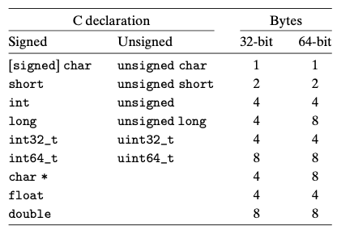
2.1.3 주소지정과 바이트 순서
- 여러 바이트에 걸쳐 있는 프로그램 객체들에 있어 두 개의 관습 설정
- 객체의 주소가 무엇이 되어야 하는지
- 메모리에 바이트들을 어떻게 정렬해야 하는지
- 비트 표시 [xw−1, xw−2, . . . , x1, x0]를 갖는 w-비트 정수가 있다.
- 가장 중요한 바이트 : [xw−1, xw−2, . . . , xw−8]
- 가장 덜 중요한 바이트 : [x7, x6, . . . , x0]
- 바이트 저장 방법
- 리틀 엔디안 : 가장 덜 중요한 바이트가 먼저 오는
- 빅 엔디안 : 가장 중요한 바이트가 먼저 오는
- 대부분의 인텔 호환 머신들은 리틀 엔디안 방식으로 동작
- 바이트 순서가 이슈가 되는 경우
- 이진 데이터가 네트워크를 통해 다른 컴퓨터로 전송될 때
- 리틀 엔디안과 빅 엔디안과의 통신에 있어 바이트 순서가 뒤바뀜
- 정수 데이터를 나타내는 바이트들을 살펴볼 때
- 프로그램이 정상적인 타입 체계를 회피하도록 작성되었을 때
- 이진 데이터가 네트워크를 통해 다른 컴퓨터로 전송될 때
2.1.4 스트링의 표시
그냥 ASCII를 사용한다는 내용,,,
2.1.5 코드의 표현
-
인스트럭션들의 인코딩이 컴퓨터 타입마다 모두 다름
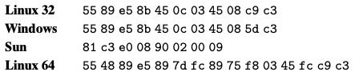
-
컴퓨터 시스템에서 근본 개념은 컴퓨터의 관점에서 볼 때 프로그램이라는 것은 단순히 바이트의 연속이라는 것
2.1.6 부울 Boolean 대수
- NOT :
~ - AND :
& - OR :
| -
EXCLUSIVE-OR :
^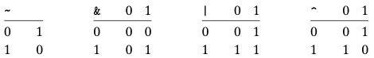
2.1.7 C에서의 비트수준 연산
-
C에서는 비트들 간의 부울 연산을 지원
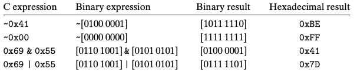
-
비트수준 연산은 일반적으로 마스크 연산을 구현할 때 사용한다.
마스크: 비트 연산에 사용되는 데이터
2.1.9 C에서의 쉬프트 연산
- 비트 패턴을 좌우로 이동시키는 쉬프트 연산 집합 제공
- x « k
- x는 좌측으로 k비트 이동하고, 중요한 좌측의 k비트가 밀려서 삭제되며, 우측에는 k개의 0으로 채워진다.
- x » k
- 좌측 쉬프트와 비슷하지만 미묘한 차이가 있다.
- 논리 우측 쉬프트 : 좌측 끝을 k개의 0들로 채움
- 산술 우측 쉬프트 : 좌측 끝을 가장 중요한 비트를 K개 반복해서 채움
- 부호형 데이터는 산술 우측 쉬프트, 비부호형 데이터는 논리 우측 쉬프트 사용
2.2 정수의 표시
-
컴퓨터가 어떻게 정수를 인코딩하고 사용하는지, 아래 그림은 수학적 용어들로 나열한 것
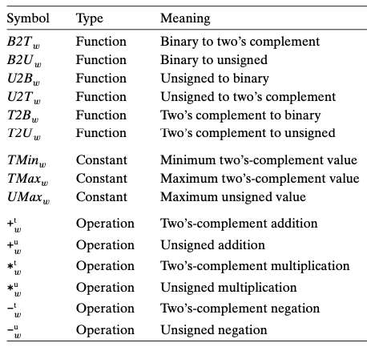
2.2.1 정수형 데이터 타입
- 서로 다른 크기에 할당된 바이트 수는 컴퓨터의 워드 크기와 컴파일러에 따라 달라진다.
- 64비트 프로그램에서의 C 정수형 자료형의 일반적인 범위
- 음수의 범위가 양의 범위보다 1 더 넓은 것에 주목
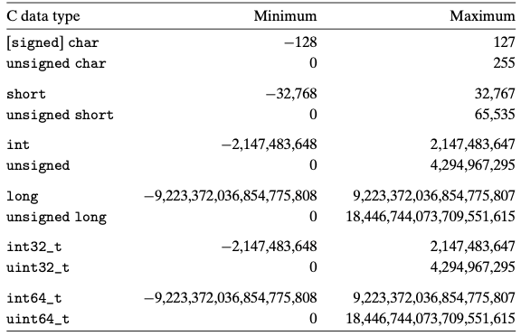
2.2.2 비부호형의 인코딩
- 음수 값을 포함하지 않음
-
B2U는 Binary 에서 Unsigned의 줄임말
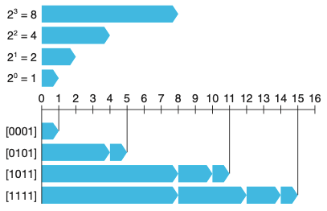 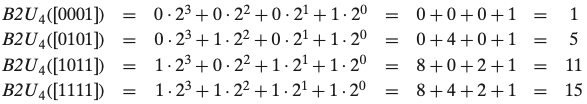
2.2.3 2의 보수 two’s complement 인코딩
- 음수 값을 포함
-
B2T는 Binary 에서 Two’s complement의 줄임말
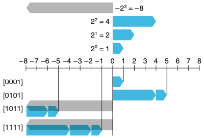 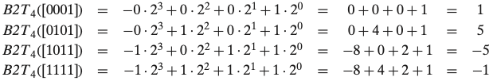
모든 머신들에서의 호환성을 극대화하는 것을 고려하는 프로그래머라면 자료형들의 보장된 범위를 넘어가는 표현 가능한 값의 특정 범위를 가정해서는 안되며, 부호형 수에 대해서 특정 표시를 가정해서도 안된다.
2.2.4 비부호형과 부호형 간의 변환
- C는 서로 다른 숫자 데이터 타입들 간에 캐스팅을 허용한다.
- 2의 보수에서 비부호형으로의 변환
- TMin ≤ x ≤ TMax를 만족하는 x에 대해
x가 0보다 크거나 같으면 x
x가 0보다 작으면 x+2^w
이유는 2의 보수는 가장 중요한 바트 위치에 부호를 표현하는 비트를 사용하는데 Unsigned에서는 부호비트를 사용하지 않기 때문이다.
- TMin ≤ x ≤ TMax를 만족하는 x에 대해
- 비부호형에서 2의 보수로의 변환
- 0 ≤ u ≤ UMax를 만족하는 u에 대해
u가 TMax보다 작거나 같으면 u
u가 TMax보다 크면 u-2^w
이유는 T2U의 이유와 동일하다.
이러한 특성이 산술연산에서 오버플로우를 일으킨다. 2.3장에서 해당 내용이 나올 예정이다.(이해하는데 살짝 오래걸려씀 ㅜㅜ..) - 0 ≤ u ≤ UMax를 만족하는 u에 대해
2.2.5 C에서 부호형과 비부호형의 비교
- C에서는 부호형과 비부호형 산술연산을 지원한다.
- C는 묵시적으로 부호형 인자를 비부호형으로 변환하고, 숫자들이 비음수라고 가정하고 계산을 수행한다. 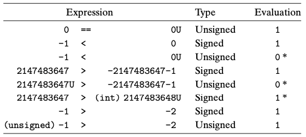
2.2.6 수의 비트 표시를 확장하기
- 비부호형 수를 길이가 긴 데이터 타입으로 변환하기 위해서 단순히 앞에 0들을 추가할 수 있다.
- 영의 확장 zero extension 이라고 알려짐
- 2의 보수를 보다 긴 데이터 타입으로 변환하려면 앞에 가장 중요한 비트를 복사해서 추가한다.
- 부호 확장 sign extension 이라고 알려짐
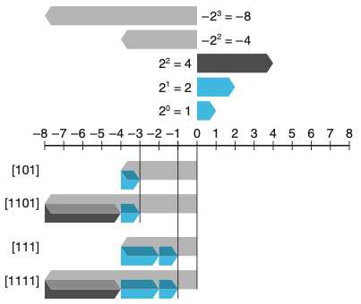
2.2.7 숫자의 절삭
진짜 진짜 너무 어려웠다… mod가 뭔지 몰랐는데 mod는 나머지 구하기를 뜻하고 있다.
- 비트의 개수를 줄이는 경우이다.
- eg1) int type을 short type으로 캐스팅할 때. 32비트 int를 16비트 short로 절삭한다.
- 비부호형 수의 절삭
- x’ = x mod 2^k 이다.
- 삭제되는 모든 비트들은 i ≥ k인 2^i의 자리값을 가진다.
- 자리값들은 모듈(mod) 계산으로 모두 0이 된다.
- x’ = x mod 2^k 이다.
- 2의 보수 숫자의 절삭
- x’ = U2T(x mod 2^k) 이다.
- 가장 중요한 비트인 x_k-1이 자리값 2^(k-1) 대신 -2^(k-1)을 갖는 효과를 가진다.
- x’ = U2T(x mod 2^k) 이다.
2.2.8 Signed와 Unsigned에 관한 조언
- 부호형을 비부호형으로 묵시적인 타입 변환을 하면 다소 직관적이지 않은 동작을 보인다.
- 비부호형 값들은 워드 길이 데이터를 숫자 값으로 해석하지 않고 단지 비트들의 집합으로 생각하려는 경우에 매우 유용하다.
2.2 정수의 표현 챕터에서 나온 Signed와 Unsigned의 인코딩, 변환, 비교 그리고 비트 확장 및 절삭은 다음 챕터인 산술연산에서 모두 사용된다. 위의 내용들을 정확히 숙지하지 않고 산술연산을 공부하게 되면 많은 어려움을 겪을 수 있다. 이번 챕터를 확실하게 이해하고 다음 챕터로 넘어가자.